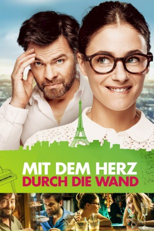

#5516 Mit dem Herz durch die Wand
 
 IMDB-Wertung: 6.5 / 10
IMDB-Wertung: 6.5 / 10  Metascore: 0
Metascore: 0 
Sie ist Pianistin, er will seine Ruhe. Beide sind neuerdings Nachbarn und die Wand zwischen ihren Apartments ist so dünn, dass man jedes Geräusch hören kann. Als das Mauerblümchen Madame frisch in ihre neue Wohnung einzieht, ist für den kauzigen Spieleerfinder Monsieur klar: die laute Nachbarin muss mit allen Mitteln vertrieben werden. Diese leistet allerdings heftigen Widerstand, lautstark machen sich die Singles gegenseitig das Leben zur Hölle. Doch bald bemerken die beiden, dass sie vieles verbindet. Ohne sich je gesehen zu haben, beginnt ein Blind-Date durch die Wand...
Jahr: 2015
Dauer: 91 Minuten
FSK:
Land: Frankreich Studio: Pandastorm PicturesTonspuren: DTS - ,
Untertitel: Deutsch,
Auflösung: 1080p (1920x800) Größe: 6328 MB
Genre: Komödie, Liebe
Regisseur: Clovis Cornillac
Drehbuch: David Loucka
Soundtrack:
Darsteller:
 Clovis Cornillac als Machin
Clovis Cornillac als Machin- Lilou Fogli als Charlotte
- Manu Payet als Le caissier Picard
- Mélanie Bernier als Machine
- Philippe Duquesne als Artus
- Grégoire Oestermann als Evguenie
- Oscar Copp als Dan
- Boris Terral als L'inconnu italien
- Arnaud Lechien als Paul
- Stefan Godin als Déménageur 1
- Harrison Arevalo als Déménageur 2
- Olivier Bouana als Mathieu
- Rudy Milstein als Igor
- Claude Evrard als Vleux voisin
- Sophie Le Tellier als La mère de Juliette
- Lily Cornillac als Lou
- Alice Cornillac als Alix
- Olga Sékulic als Myriam
- Elisa Cornillac als Mère poussette
- Jérôme Le Banner als Père gamin téléphone
- Gérald Laroche als Jury concours piano 1
- Donna Flandrin als Jury concours piano 2
- Hiro Uchiyama als Jury concours piano 3
- Philippe Vincent als Jury concours piano 4
- Christophe Vandevelde als Régisseur Trianon
- Julie Mathiot als Hôtesse d'accueil restaurant
Datei: X:\2015(G-M)\Mit dem Herz durch die Wand (2015, FSK, 1920x800).mkv seit 13.02.2017
Festplatte: HD 2015(A-Z)
 Es gibt insgesamt 129 Filme in der Gruppe '2015(G-M)'
Es gibt insgesamt 129 Filme in der Gruppe '2015(G-M)'